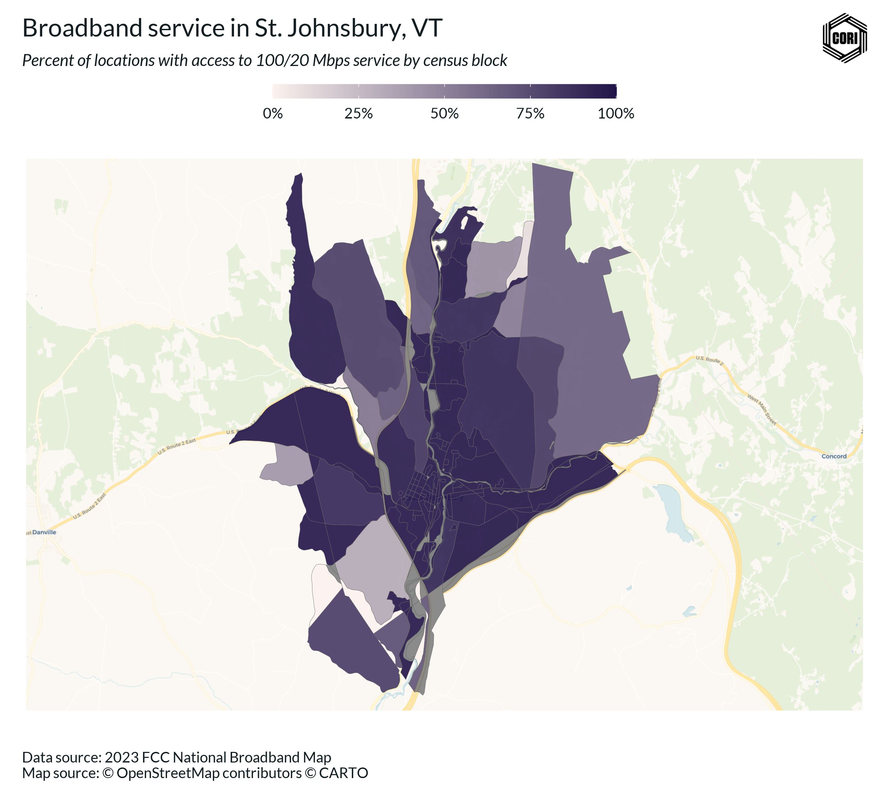
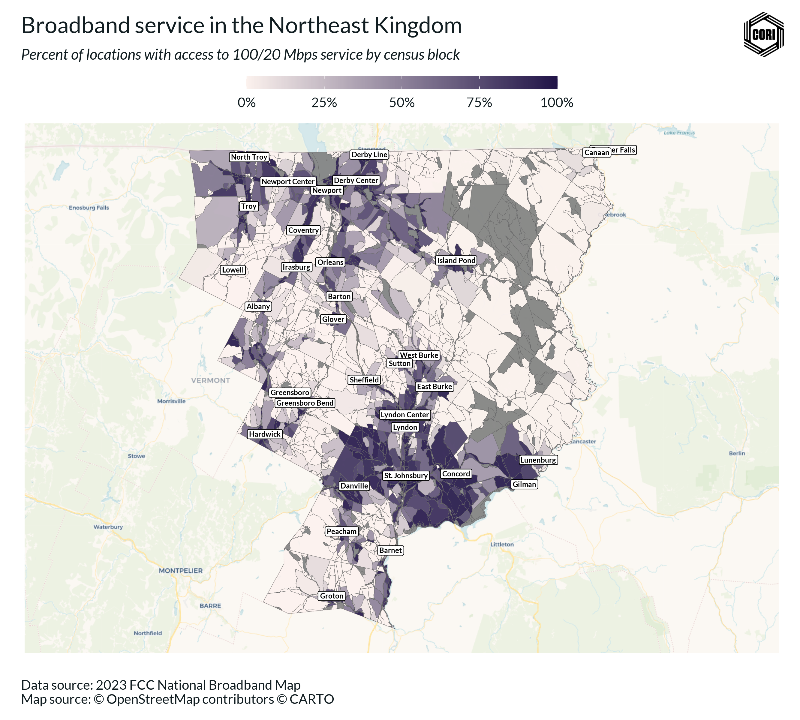
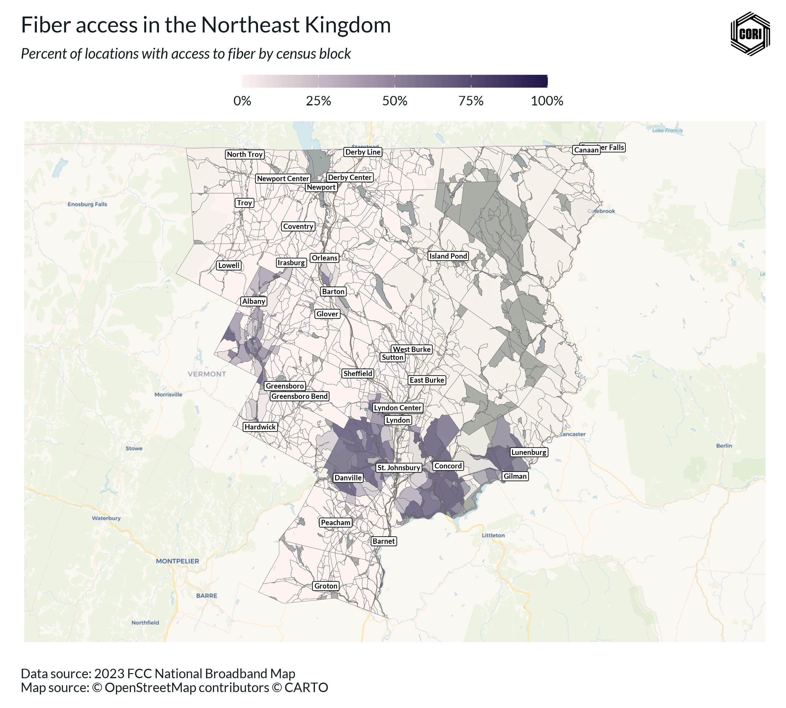
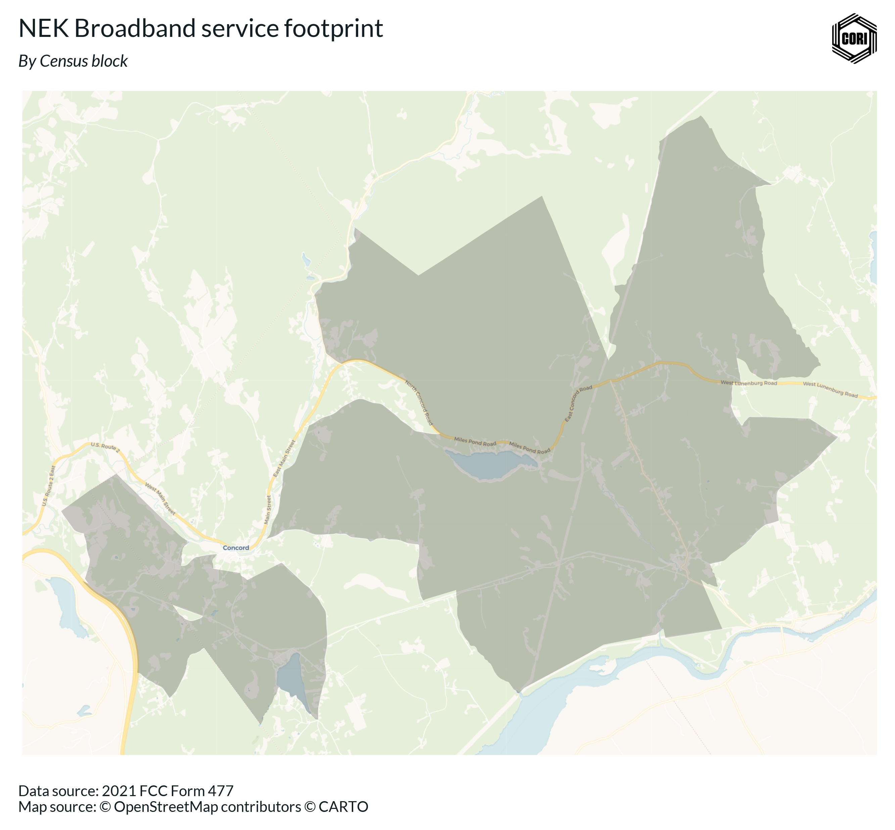
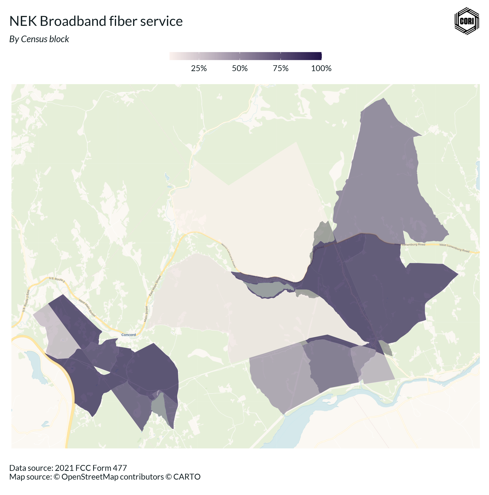

caledonia_co_nbm <- get_nbm_bl(geoid_co = "50005")
essex_co_nbm <- get_nbm_bl(geoid_co = "50009")
orleans_co_nbm <- get_nbm_bl(geoid_co = "50019")
nek_nbm <- bind_rows(
caledonia_co_nbm,
essex_co_nbm,
orleans_co_nbm
)Here at the Center on Rural Innovation, we spend a lot of time thinking about broadband data. We’ve created detailed interactive maps of broadband service, produced research on the economic impacts of broadband on rural areas, and helped states and regions develop more equitable and effective broadband strategies. Now, we’re excited to share cori.data.fcc, an R package which makes Federal Communication Commission (FCC) broadband data releases more accessible than ever before.
In this blog post, I’ll cover three ways you can make use of our package to better understand broadband access and gaps.
1. View broadband service in your area
cori.data.fcc makes it easy to quickly pull data on broadband service for your area. In particular, using the get_nbm_bl function, you can access a CORI-opinionated version of the National Broadband Map’s latest release at the Census block level for any U.S. county.
In the example below, I pull NBM data for the “Northeast Kingdom” of Vermont, a region consisting of Caledonia, Essex, and Orleans counties, and then bind them together.
Here’s what the data looks like:
glimpse(nek_nbm)Rows: 4,363
Columns: 21
$ geoid_bl <chr> "500059570001000", "5000595700…
$ geoid_st <chr> "50", "50", "50", "50", "50", …
$ geoid_co <chr> "50005", "50005", "50005", "50…
$ state_abbr <chr> "VT", "VT", "VT", "VT", "VT", …
$ cnt_total_locations <int> 1, 4, 5, 62, 3, 24, NA, 2, NA,…
$ cnt_bead_locations <int> 0, 1, 4, 46, 1, 3, NA, 0, NA, …
$ cnt_copper_locations <int> 0, 0, 0, 0, 0, 0, NA, 0, NA, 0…
$ cnt_cable_locations <int> 0, 0, 0, 0, 0, 0, NA, 0, NA, 0…
$ cnt_fiber_locations <int> 0, 0, 0, 0, 0, 0, NA, 0, NA, 0…
$ cnt_other_locations <int> 0, 0, 0, 0, 0, 0, NA, 0, NA, 0…
$ cnt_unlicensed_fixed_wireless_locations <int> 0, 0, 0, 0, 0, 0, NA, 0, NA, 0…
$ cnt_licensed_fixed_wireless_locations <int> 0, 1, 4, 46, 1, 3, NA, 0, NA, …
$ cnt_LBR_fixed_wireless_locations <int> 0, 0, 0, 1, 0, 0, NA, 0, NA, 0…
$ cnt_terrestrial_locations <int> 0, 1, 4, 46, 1, 3, NA, 0, NA, …
$ cnt_25_3 <int> 0, 1, 4, 41, 1, 2, NA, 0, NA, …
$ cnt_100_20 <int> 0, 0, 0, 0, 0, 0, NA, 0, NA, 0…
$ cnt_100_100 <int> 0, 0, 0, 0, 0, 0, NA, 0, NA, 0…
$ cnt_distcint_frn <int> NA, 1, 2, 4, 1, 2, NA, NA, NA,…
$ array_frn <list> <NULL>, "0006945950", <"00036…
$ combo_frn <dbl> NA, 1.284636e+19, 1.389614e+19…
$ release <date> 2023-12-01, 2023-12-01, 2023-…Next, we can pull spatial data using the tigris package to help us visualize the NBM data.
# Load all Vermont Census blocks
vt_blocks <- tigris::blocks("VT", progress_bar = FALSE)
# Load the Place boundary for the town of St. Johnsbury, VT
vt_places <- tigris::places(state = "VT", progress_bar = FALSE)
stj_vt <- vt_places %>% filter(GEOID == "5062125")We’re going to take a look at broadband service in the town of St. Johnsbury, VT - one of the main towns in the region. To do so, we can filter to blocks that intersect with St. Johnsbury’s place boundary and then combine this data with NBM data to calculate the percent of locations in each block in St. Johnsbury that have 100/20 Mbps service, the FCC service benchmark for high speed broadband.
stj_vt_blocks <- vt_blocks %>%
filter(lengths(st_intersects(., stj_vt)) > 0)
stj_vt_bb_blocks <- inner_join(
stj_vt_blocks,
nek_nbm,
by = c("GEOID20" = "geoid_bl")
) %>%
mutate(
pct_100_20 = cnt_100_20 / cnt_total_locations
)Now that we’ve prepared our data, we can map it using ggplot to get a sense of the spatial trends of broadband access in St. Johnsbury.
bbox <- st_bbox(stj_vt_bb_blocks) %>%
fit_bbox_to_aspect_ratio(target_aspect_ratio = 2)
fig <- ggplot(data = stj_vt_bb_blocks) +
base_map(
bbox,
increase_zoom = 3,
basemap = 'voyager'
) +
geom_sf(aes(fill = pct_100_20), color = "dimgray", linewidth = .1, alpha = 0.9) +
scale_fill_cori(
discrete = FALSE,
palette = "ctg2pu",
labels = scales::label_percent(),
reverse = T
) +
coord_sf(
expand = TRUE,
xlim = c(bbox['xmin'], bbox['xmax']),
ylim = c(bbox['ymin'], bbox['ymax'])
) +
theme_cori_map() +
theme(
legend.key.width = unit(50, "pt"),
) +
labs(
title = "Broadband service in St. Johnsbury, VT",
subtitle = "Percent of locations with access to 100/20 Mbps service by census block",
caption = "Data source: 2023 FCC National Broadband Map\nMap source: © OpenStreetMap contributors © CARTO"
)
save_plot(fig, here("posts/cori_data_fcc_overview/images/st_j_bb_service.png"), chart_height = 8)
We can also easily plot broadband service data for the entire Northeast Kingdom.
# Get Census block BB data for the Northeast Kingdom
nek_bb_blocks <- inner_join(
vt_blocks,
nek_nbm,
by = c("GEOID20" = "geoid_bl")
) %>%
mutate(
pct_100_20 = cnt_100_20 / cnt_total_locations,
pct_fiber = cnt_fiber_locations / cnt_total_locations
)
# Get major NEK Place centroids for map labeling
vt_places_centroids <- vt_places %>%
st_as_sf() %>%
st_centroid() %>%
filter(lengths(st_intersects(., nek_bb_blocks)) > 0)Warning: st_centroid assumes attributes are constant over geometriesbbox <- st_bbox(nek_bb_blocks) %>%
fit_bbox_to_aspect_ratio(target_aspect_ratio = 2)
fig <- ggplot(data = nek_bb_blocks) +
base_map(
bbox,
increase_zoom = 3,
basemap = 'voyager'
) +
geom_sf(aes(fill = pct_100_20), color = "dimgray", linewidth = 0.1, alpha = 0.9) +
scale_fill_cori(
discrete = FALSE,
palette = "ctg2pu",
labels = scales::label_percent(),
reverse = T
) +
geom_sf_label(data = vt_places_centroids, aes(label = NAME), size = 2, color = "black", family = "Lato", fontface = "bold") +
coord_sf(
expand = TRUE,
xlim = c(bbox['xmin'], bbox['xmax']),
ylim = c(bbox['ymin'], bbox['ymax'])
) +
theme_cori_map() +
theme(
legend.key.width = unit(50, "pt"),
) +
labs(
title = "Broadband service in the Northeast Kingdom",
subtitle = "Percent of locations with access to 100/20 Mbps service by census block",
caption = "Data source: 2023 FCC National Broadband Map\nMap source: © OpenStreetMap contributors © CARTO",
x = NULL,
y = NULL
)attribution: © <a href="https://www.openstreetmap.org/copyright">OpenStreetMap</a> contributors © <a href="https://carto.com/attributions">CARTO</a>save_plot(fig, here("posts/cori_data_fcc_overview/images/nek_bb_service.png"), chart_height = 8)Warning in st_point_on_surface.sfc(sf::st_zm(x)): st_point_on_surface may not
give correct results for longitude/latitude data
We can also explore broadband access by technology, such as fiber, cable, and fixed wireless.
fig <- ggplot(data = nek_bb_blocks) +
base_map(
bbox,
increase_zoom = 3,
basemap = 'voyager'
) +
geom_sf(aes(fill = pct_fiber), color = "dimgray", linewidth = 0.1, alpha = 0.6) +
scale_fill_cori(
discrete = FALSE,
palette = "ctg2pu",
labels = scales::label_percent(),
reverse = T
) +
geom_sf_label(data = vt_places_centroids, aes(label = NAME), size = 2, color = "black", family = "Lato", fontface = "bold") +
coord_sf(
expand = TRUE,
xlim = c(bbox['xmin'], bbox['xmax']),
ylim = c(bbox['ymin'], bbox['ymax'])
) +
theme_cori_map() +
theme(
legend.key.width = unit(50, "pt"),
) +
labs(
title = "Fiber access in the Northeast Kingdom",
subtitle = "Percent of locations with access to fiber by census block",
caption = "Data source: 2023 FCC National Broadband Map\nMap source: © OpenStreetMap contributors © CARTO",
x = NULL,
y = NULL
)attribution: © <a href="https://www.openstreetmap.org/copyright">OpenStreetMap</a> contributors © <a href="https://carto.com/attributions">CARTO</a>save_plot(fig, here("posts/cori_data_fcc_overview/images/nek_fiber_service.png"), chart_height = 8)Warning in st_point_on_surface.sfc(sf::st_zm(x)): st_point_on_surface may not
give correct results for longitude/latitude data
Fiber service is pretty rare! Only a handful of towns have access.
We can easily generate some summary statistics to see what percent of locations in the region have fiber access.
# Calculate share of locations with access to fiber
nek_locations_total <- nek_bb_blocks %>%
pull(cnt_total_locations) %>%
sum(na.rm = T)
nek_locations_fiber <- nek_bb_blocks %>%
pull(cnt_fiber_locations) %>%
sum(na.rm = T)
nek_locations_fiber / nek_locations_total[1] 0.1151458Turns out only 11.5% of locations have fiber access in the Northeast Kingdom.
1. View Internet Service Provider (ISP) footprints
We can also use cori.data.fcc to understand ISP presence in an area. Let’s begin by pulling data for the state of Vermont.
vt_477 <- get_f477("VT", frn = "all")In this example, I’m interested in seeing the footprint for NEK Broadband, a community non-profit bringing high-speed broadband to the Northeast Kingdom.
Each ISP has a unique FRN in the Form 477 data. To view, NEK Broadband data we can filter using this unique FRN.
nek_bb_frn <- "0031871197"
nek_service <- vt_477 %>%
filter(FRN == nek_bb_frn) %>%
mutate(
Date = as.character(Date)
)Here’s what the Form 477 data looks like for NEK Broadband:
glimpse(nek_service)Rows: 49
Columns: 15
$ Provider_Id <chr> "82841", "82841", "82841", "82841", "82841", "82841…
$ FRN <chr> "0031871197", "0031871197", "0031871197", "00318711…
$ ProviderName <chr> "NEK Community Broadband", "NEK Community Broadband…
$ DBAName <chr> "NEK Broadband", "NEK Broadband", "NEK Broadband", …
$ HoldingCompanyName <chr> "NEK Broadband", "NEK Broadband", "NEK Broadband", …
$ HocoNum <chr> "450083", "450083", "450083", "450083", "450083", "…
$ HocoFinal <chr> "NEK Community Broadband", "NEK Community Broadband…
$ StateAbbr <chr> "VT", "VT", "VT", "VT", "VT", "VT", "VT", "VT", "VT…
$ BlockCode <chr> "500059579001016", "500099505002004", "500099505003…
$ TechCode <chr> "50", "50", "50", "50", "50", "50", "50", "50", "50…
$ Consumer <lgl> TRUE, TRUE, TRUE, TRUE, TRUE, TRUE, TRUE, TRUE, TRU…
$ MaxAdDown <int> 250, 250, 250, 250, 250, 250, 250, 250, 250, 250, 2…
$ MaxAdUp <int> 250, 250, 250, 250, 250, 250, 250, 250, 250, 250, 2…
$ Business <lgl> TRUE, TRUE, TRUE, TRUE, TRUE, TRUE, TRUE, TRUE, TRU…
$ Date <chr> "2021-12-01", "2021-12-01", "2021-12-01", "2021-12-…To map the data, we can once again join in with Census blocks from TIGRIS.
nek_service_blocks <- left_join(
nek_service,
vt_blocks,
by = c("BlockCode" = "GEOID20")
) %>%
left_join(
.,
nek_nbm,
by = c("BlockCode" = "geoid_bl")
) %>%
mutate(
pct_100_20 = cnt_100_20 / cnt_total_locations,
pct_fiber = cnt_fiber_locations / cnt_total_locations
) %>%
sf::st_as_sf()#
# bbox <- st_bbox(nek_service_blocks) %>%
# fit_bbox_to_aspect_ratio(target_aspect_ratio = 2)
fig <- ggplot(data = nek_service_blocks) +
base_map(
st_bbox(nek_service_blocks),
increase_zoom = 3,
basemap = 'voyager'
) +
geom_sf(fill = "black", color = "black", linewidth = 0, alpha = .2) +
theme_cori_map() +
labs(
title = "NEK Broadband service footprint",
subtitle = "By Census block",
x = NULL,
y = NULL,
caption = "Data source: 2021 FCC Form 477\nMap source: © OpenStreetMap contributors © CARTO",
)attribution: © <a href="https://www.openstreetmap.org/copyright">OpenStreetMap</a> contributors © <a href="https://carto.com/attributions">CARTO</a>save_plot(fig, here("posts/cori_data_fcc_overview/images/nek_broadband_footprint.png"), chart_height = 8.25)
We can also examine what service NEK Broadband is reported to be providing.
fig <- ggplot(data = nek_service_blocks) +
base_map(
st_bbox(nek_service_blocks),
increase_zoom = 3,
basemap = 'voyager'
) +
geom_sf(aes(fill = pct_fiber), color = "black", linewidth = 0, alpha = .7) +
scale_fill_cori(
discrete = FALSE,
palette = "ctg2pu",
labels = scales::label_percent(),
reverse = TRUE
) +
theme_cori_map() +
theme(
legend.key.width = unit(40, "pt")
) +
labs(
title = "NEK Broadband fiber service",
subtitle = "By Census block",
x = NULL,
y = NULL,
caption = "Data source: 2021 FCC Form 477\nMap source: © OpenStreetMap contributors © CARTO",
)attribution: © <a href="https://www.openstreetmap.org/copyright">OpenStreetMap</a> contributors © <a href="https://carto.com/attributions">CARTO</a>save_plot(fig, here("posts/cori_data_fcc_overview/images/nek_broadband_fiber_service.png"), chart_height = 9)